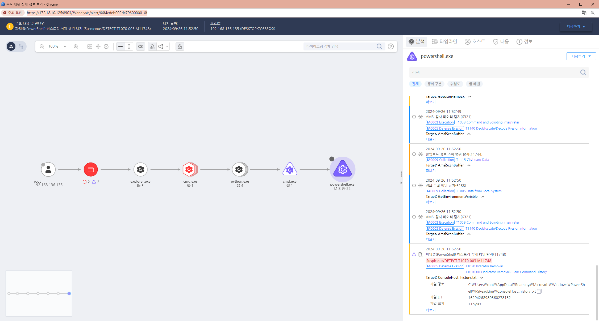

T1070.003.11 Indicator Removal on Host: Clear Command History
D3FEND
MITRE ATT&CK 액션을 기준으로 대응 방안을 작성
Detection
Action = File-Delete AND
FilePath =(contains) "${EnvVar.path.appdata}\Microsoft\Windows\PowerShell\PSReadLine\" AND
FilePath =(End with) "Host_history.txt"
Detection(EDR)

Response
해당 행위를 수행한 프로세스를 종료합니다.
공격자에 의해 PC가 제어되었을 가능성이 있으므로 호스트 네트워크를 격리합니다.
공격자 C&C 서버로 추정되는 주소를 차단합니다.
Mitigations
명령어 기록 파일에 대한 무결성 모니터링
- 명령어 히스토리 파일(~/.bash_history 등)에 대한 변경 사항을 모니터링하고, 비정상적인 삭제나 수정 시 경고를 받는 무결성 모니터링 솔루션을 사용합니다.
- 파일의 해시 값을 주기적으로 확인하여, 예상치 못한 수정이나 삭제가 감지될 경우 이를 알리고 조사할 수 있도록 설정합니다.
- AIDE(Advanced Intrusion Detection Environment) 같은 도구를 사용해 시스템 파일의 변경을 감시할 수 있습니다.
명령어 기록 파일 접근 제어
- 명령어 히스토리 파일에 대한 접근 권한을 제한하여, 권한이 없는 사용자가 파일을 수정하거나 삭제하지 못하도록 설정합니다.
- 파일의 소유자와 권한을 엄격하게 설정하여 특정 사용자만이 파일을 읽고 쓸 수 있도록 제한합니다.
- 예를 들어, ~/.bash_history 파일의 권한을 다음과 같이 설정할 수 있습니다:
bash
코드 복사
chmod 600 ~/.bash_history # 소유자만 읽기 및 쓰기 권한 부여
시스템 로깅 및 중앙화된 로그 관리
- syslog, auditd와 같은 시스템 로깅 도구를 사용하여 각 시스템에서 발생하는 명령어 기록을 중앙화된 로그 서버로 전송합니다.
- 이렇게 하면 공격자가 로컬 시스템에서 명령어 히스토리를 삭제하더라도 중앙 로그 서버에 기록이 남아 있을 수 있습니다.
- 중앙화된 로그 관리 시스템은 공격자가 로그를 제거하거나 수정하는 것을 더 어렵게 만들고, 침입 후 흔적을 남기기 어려운 환경을 조성합니다.
쉘 환경에서 히스토리 기록 비활성화 방지
- 공격자는 쉘 세션에서 히스토리 기록을 비활성화하거나 특정 명령을 기록하지 않도록 설정할 수 있습니다.
- 이를 방지하려면, 쉘 환경 설정 파일(~/.bashrc 등)에서 관련 환경 변수를 보호해야 합니다.
- 예를 들어, HISTFILE, HISTSIZE, HISTCONTROL 같은 환경 변수가 변경되지 않도록 모니터링하거나 강제할 수 있습니다.
- 또한, 히스토리를 비활성화하는 unset HISTFILE 또는 export HISTCONTROL=ignorespace 같은 명령을 방지할 수 있습니다.
사용자 행동 분석 및 모니터링
- 공격자가 히스토리를 지우기 전에 수행한 명령을 분석하고, 이상 행동을 탐지할 수 있는 사용자 및 엔티티 행동 분석(UEBA, User and Entity Behavior Analytics) 솔루션을 도입합니다.
- 사용자의 평소 행동과 다른 패턴(예: 관리자 권한이 없는 사용자가 갑작스럽게 파일을 수정하거나 삭제하려는 시도)을 감지하고 이에 대응할 수 있습니다.
안티멀웨어 및 엔드포인트 보호 솔루션
- 최신 안티멀웨어 및 엔드포인트 탐지 및 대응(EDR) 솔루션을 사용하여, 명령어 히스토리를 삭제하려는 시도나 악성 활동을 실시간으로 탐지하고 차단할 수 있습니다.
- 이러한 솔루션은 사용자의 행동을 지속적으로 모니터링하고, 비정상적인 활동이 감지될 때 경고를 제공합니다.
사용자 교육 및 인식 제고
- 시스템 관리자를 대상으로 히스토리 삭제의 위험성을 교육하고, 명령어 히스토리를 안전하게 유지하는 방법을 인식시킵니다.
- 또한, 명령어 히스토리 파일을 삭제하거나 비활성화하는 행위가 허용되지 않음을 명확히 하고, 이를 수행할 경우 보안 위반으로 간주될 수 있음을 교육합니다.
Affected Techniques
Action 실행시 함께 영향을 받는 다른 Techniqes
| ATT&CK |
| T1070.003 |
| T1059.001 |
| T1562.003 |
| D3FEND |
| D3-FE File Eviction |
| D3-PLA Process Lineage Analysis |